单点工具 (Tool)
一把只切西瓜而不做其他兼职的纯粹斧头或者钳子。例如一款去除图片背景在线噪点的纯 Web 脚本压花器。它是无状态极简的流水线节点，用完即抛，不在乎生命痕迹残留。
全生命周期架构启示录
本书详尽讲解了如何抛弃玩具项目的浅尝辄止，通过 LifeOnline 彻底看清一个拥有灵魂动作、认知对象、断点延续能力的大型联合认知体是如何从 0 到 1 建成的。
这本书是写给没有软件开发经验的小白的。不是写给已经熟练掌握前端框架、懂微服务架构的资深开发者，也不是写给那些只想背诵几个提示词就去“一键生成应用”的速成员。
如果你现在的状态是：
那么，这本书就是为你准备的。
它不打算先把你变成语法机器，让你从 `print("hello world")` 学起，而是先帮你建立一张宏大的全景地图：软件是什么、系统是怎么长出来的、以及 AI 在这个过程中应该如何被用作高级结构师。
过去，很多人把“不会写代码”等同于“没有资格参与软件创造”。大模型的爆发改变了这件事：不会写代码的人，第一次有可能真正参与到系统的构思、架构设计、任务拆解、需求验证和迭代治理之中。
但这并不意味着软件变“简单”了。门槛的下降，不等于复杂性的消失。恰恰相反，当生成代码变得像点菜一样容易时，你面临的最大危机不再是“写不出代码”，而是“掌控不了代码的边界”。当你让 AI 随便加功能时，如果没有对架构和系统的深刻认知，最终只会收获一堆“能在你的电脑上偶然跑通，但一碰就碎”的数字垃圾。
因此我们必须认识到：越是容易生成散乱的代码，越需要在脑海里具备极强的系统观——什么是模块边界、什么是治理状态、什么是信息回流。
读完这一章，你不需要立刻去背诵编程语法，你只需要建立一个信念：现在的你是系统的架构师与产品经理。你要用逻辑、流程与结构控制你的 AI 执行器。
如果你翻开大多数“教小白用 AI 写代码”的书籍或教程，通常会教你做一个待办事项列表（To-Do List），或者一个非常简单的单页面计算器。这些都是“玩具项目（Toy Project）”。
本书不使用玩具项目。在此，我们将以 LifeOnline——一个正在真实迭代、且在生产环境中运行的大型复杂系统，作为我们讲解的全程蓝本。
为什么？因为玩具项目会掩盖软件工程中最真实的痛点。
LifeOnline 代表的是一种更接近未来的软件形态：它不仅是一个提供界面操作的软件工具，更是一个力图维持认知连续性的人机联合认知体（Human-AI Cognitive System）。
它的目标不是“用户点击按钮、获取翻译结果”这种即插即用的短链路反馈，而是处理非常深、非常长、横跨现实与数字世界的动作链条：
这正是用来学习软件架构的完美范本！因为它逼着我们越过表面的“前端样式”，去直接面对那些打造能够存活十年的软件所必须考虑的真正问题：
如果我们能用 LifeOnline 把这些从概念层（前端、后端）一直摸透到执行层（任务有向无环图、熔断器）的底层机制讲明白，这本书就不会是一本被下一次大模型升级就淘汰的技术教程。它呈现的是应对一切复杂业务挑战的“架构心法”。
选择 LifeOnline 作为蓝本，不是因为它“炫酷”，而是因为它迫使我们正视“系统边界”、“动作治理”、“数据回流”和“思维连续性”等所有阻碍玩具项目演进为可用工程的真实命题。
把“软件是页面”这层浅显的认知，跨越式地升维成“软件是对现实问题的一种可运行的数字组织方式”。
很多初学者对软件的第一印象，是一个手机上的 App 弹窗、一个五颜六色的网站排版、一套好看的侧边栏按钮。这些外在表现当然是软件的一环，但它们只看到了冰山上露出的最末端的“像素”。
更本质地说：软件，是把现实世界中杂乱无章的目标、流动的规则、业务的流转状态，以及信息的生命周期，变成一套可以严丝合缝地、以极低出错率稳定计算和运行的数字沙盘。
以一个大家都很熟悉的例子来说：一个电商购物软件，绝不只是几张商品的瀑布流照片加上一个购物车界面的加减按钮。它的水面之下隐藏着庞大的运作齿轮：
你看，软件的命脉绝不在于“页面长什么样”，而在于“系统如何用逻辑组织现实流程”。
当你想通了这一点，你对待软件的关注点就会发生根本性的逆转。你不会再在起步阶段去纠结“按钮应该有多少像素的圆角”，你会去问那些最核心的架构性问题：
对于 LifeOnline 来说，我们在最开始规划阶段关心的永远不是它的 Web 控制面板用什么颜色。我们关心的是：用户的思考与笔记怎样被精准地收集为 EventNode，系统分析后该产生什么样的 `pending`（待审批）的灵魂动作（SoulAction），只有梳理清晰这些数据实体的脉络，前端页面的渲染只是水到渠成的一句画皮罢了。
软件不是“界面的堆砌物”，它是将现实的业务问题抽象为可处理对象的流水线。只有理解这一点，你才能在未来指挥 AI 时问出真正对系统架构有帮助的好问题。

很多人有一种很深切但错位的认知，他们以为“会用键盘敲打出一行代码”就等于“会从零做出一套软件”。这就如同掌握了如何使用铁锤敲击铁钉，却依然无法盖起一栋摩天大楼。会写代码，只是意味着你拥有了操纵原材料的微观工具；而“软件工程（Software Engineering）”，则是如何组织、调度一整个宏大的工程建造全生命周期过程。
软件工程的终极目标，是为了抵抗复杂系统随着时间推移自然而然走向的熵增与死亡。写代码像是一时兴起创作一首短诗，软件工程则像是为了修建通往拉萨的青藏铁路去铺设千年基岩。
这就是为什么在大模型如同井喷般爆发、“AI自动写代码”满天飞的时代，软件工程这四个字非但没有退役，反而由于代码的高光生产效率，显得前所未有的紧急和重要！AI 的长处是在瞬间写出 500 行没有任何美感的冗长代码块（Spaghetti Code），但当你将百万行的机器代码随意堆叠在项目里，没有边界感，没有任何状态机审查的约束，只要随便动哪怕一个小小的改动，就会爆发链式污染——这便是“耦合（Coupling）”最直观的可怖画面。
对于架构设计师而言，真正高级的工作是承担那个清醒的组织者。你需要建立防波堤（比如 LifeOnline 在 `soulActionDispatcher` 中对未被许可动作进行粗暴的抛弃拦截），定义何种信号该进出数据库。你不再是一名普通的搬砖工，但你成了整个图纸的总指挥。
架构听起来虚无缥缈，但初学时最实用的一种思维方法就是经典的分层结构（Level / Tiering）。一言以蔽之：把系统按各自负责的职责切薄，夹心饼干一样叠起来，每一层只允许和相邻的上下层通信打交道。
最经典也是流传最广的四层架构分层，可以这样看待：
如果切分好清晰且不相互僭越的层级，会获得怎样的高级质变？很简单：未来当你想要把 Web 界面全部换成 iOS App 端或者微信小程序时，你由于表现层和业务层的隔绝，后端无需更改哪怕一个字母！
不要再对大段晦涩难懂的代码望而却步，第一眼，去通过目录（文件夹）去看它所在的“层”。这就是资深工程师降服巨大繁杂项目的秘密。
软件工程不是单纯的“把一堆功能代码罗列在一起”，而是保证一整套庞大的系统在不断加入新创意时，能够被严谨设计、被安全落地、被自动监控测试维护，以便让这个作品能够长期强壮生长。在这个领域，懂得该说“不”并拒绝烂代码入侵，远比一味索取功能更具价值。
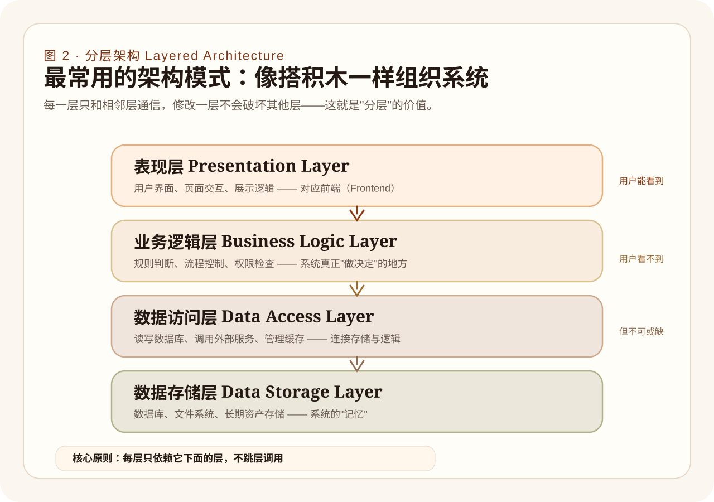
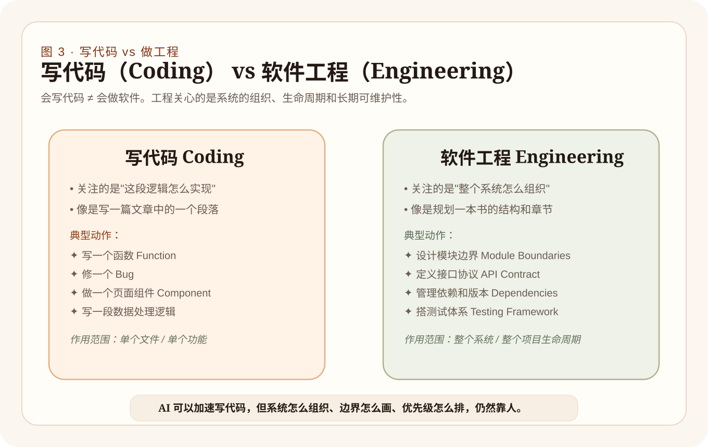
帮零基础小白建立探索系统的第一张基础宏图地标：扫清名词障碍，看懂前端仅仅是呈现的外衣，后端是思考发号施令的中枢，而数据库是不竭的记忆命池。
这是一个无论你如何绕跃都必须要建立的最底色的技术认知宏观地图。或许这辈子这部分代码都不是你亲手从零写的第一行 `div` 或 `controller`，但与 AI 一同探讨甚至对峙架构前，你绝不容许连这些词汇所在的时空坐标系都不清楚。
前端（Frontend） —— 感知器、显示器、用户交互表面
用户直接用肉眼看到、用手指触碰划过、用鼠标进行点击悬停的那一层，全是前端的世界。网页上色彩渐变的圆角按钮、滑动的提示窗、折线图表动态的铺陈，所有为了“更好地把系统里面的枯燥数据转化为人类可消化易读视图”的交互展现，就是它的首要职责任务。在真实的团队里，这帮人天天追逐着浏览器渲染引擎的平滑度以及如何减少零点几秒的首屏页面加载时间而努力厮杀。在 LifeOnline 系统里，用 Vue3 构筑的这套监控所有联合认知体指标走势的仪表展现控制台就是那显山露水的“前端”。
后端（Backend） —— 规则判别器、隐藏的大脑、指挥调度中枢
绝大多数真正对世界产生干预与判决的系统核心，都被冷酷地藏在这个黑箱当中。当你在前端点击了一个提交订单“保存”的绿按钮后，前端自己不能说了算，必须携带暗号将提单的请求包裹发出，给那千里之外深暗的服务器。这台后端主脑在这毫秒间处理着无数的验证：判断这个人身份信誉度如何？业务执行到这一步还有权限配额吗？这个动作允许被触发物理外设执行这般危险的请求吗（比如 LifeOnline 里的 dispatch_physical_action 必须过门槛审核）？只有后端允许，事情才能成。
数据库（Database） —— 浩瀚档案室、系统的最终记忆仓库
再强大的后端大脑，如果不配合一具无边无涯的记忆池，那不过也就是一台关机即丧失灵魂的普通加法计算器。系统只有把有价值的历史、走过的事件节点、甚至每一个状态变更的断口进行永久保存并锁定后，它才拥有一种能够对抗断电与时间推移的“生命史资产”。没有它，软件每一次冷开机都是零重置。在我们的项目 LifeOnline 这个超大工程域当中，存在两种极具特色的“记忆”。一个是 Vault（里面有着一篇篇人类原生态手工撰写和排版的最具原汁原味的、未经打磨粗颗粒全量信息 markdown 库）；另一个是 SQLite 的关系大结构（这是一块系统用来检索和高频驱动的高速计算硬盘）。但它们殊途同归地撑起了整个项目的运行底座。
请在大脑中时刻预演下面这样一个最经典的生命完整链路：
这张被完全梳理清晰的流转蓝图可以使这世界上极其庞杂难懂的名词全都失去伪装的面纱。在这样的高视角里，无论你接洽哪一个不知名的云服务抑或前端新奇脚手架，你自然都明确它到底附着在这个庞大骨架的哪一块功能软骨上。
前端主管呈现视觉以及发起第一声接触；后端用黑箱运算铁律主管着不可违背规则及操作控制分配；而数据库正是所有业务能够拥有生命痕迹与横跨生命周期跨度存储的记忆仓库。这三大极轴定位出了软件生命的核心三角基架。
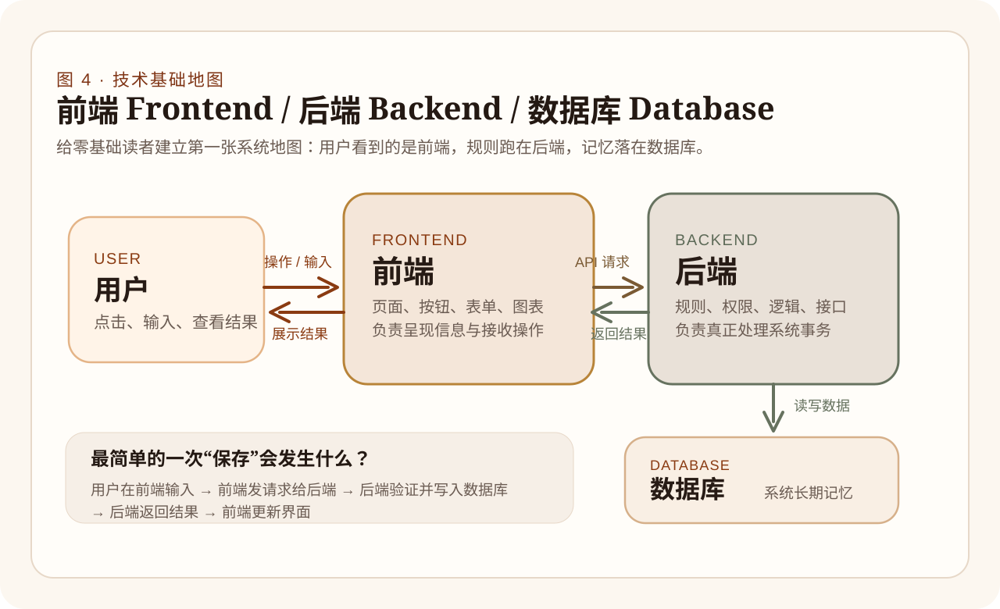
许多习惯于把“我正在开发平台”当作高调场面话挂在嘴边的人可能根本未曾剖析过这其中的天堑鸿沟。“平台”不等于体积膨胀的臃肿软件。它是指具有宽广底座能力和无数分形触角的生态孕育场。这是一个递进的概念。
一把只切西瓜而不做其他兼职的纯粹斧头或者钳子。例如一款去除图片背景在线噪点的纯 Web 脚本压花器。它是无状态极简的流水线节点，用完即抛，不在乎生命痕迹残留。
这是为了应对一个具体领域的全包裹体验舱。比如一款带有记账、提醒报表展示与周期性消费警告图谱的预算 App。它虽然有着极其严密的多种复合能力块的嵌合协作，但终究有其非常直白死板且绝对的主赛道天花板边界。
从纯产品跃迁至此的一道闪电劈痕标志就是它从“提供预制菜”变成了“售卖超级菜场开放基建”。此时产品能够提供各种权限角色、对外开放极强的 OpenAPI 并支持各色奇形怪状不知名的插件开发者像安装模块集般自由生根。它关注的是底层流转的复用性能和通用组件池支撑！
这已经触碰了远超出传统功能维度的生命体进阶层级。不仅承载最基本业务与常规信息大库记录流转，同时它内嵌了高维模型大脑提炼萃取组件、将行为流转化为对象群的提炼动作链甚至自发式的风险治理回流干预引擎体系。这也是《Soul Constitution v1.0》赋予 LifeOnline 如此极度稀有和高昂深度的绝命意义之所在。它的重点不仅在计算，而在于生命意义长周期的连接反馈连续性继承堆积沉淀。
为什么非要将这四大形态界分得清楚透辟到骨头缝之中？因为如果认知水平错误地徘徊在低层，便会将极其复杂的人机思维流转简化并退向为一个单一指令操作回复打字机般的玩具控制面板罢了！
LifeOnline 被极度刻意且坚决地规避为一个轻薄可有可无的信息工具链体系，转而正在狂飙突进向“联合认知体”。这也就解释了它为什么要去构建并不直接“马上出好图排版”而却耗尽千钧精力构建的那五大支撑对象群落。这是因为它意图构建囊括且全盘接管现实输入的接收站、统筹记忆源的事实库、自下而上重构抽象的认知中转域直至进行最高外部权限支配派发引擎管控的超星系生态宇宙网路。
当你不再仅着眼于软件本身功能的横向盲目加法增加按钮或者表单页面罗列时，通过认知“工具、产品、平台以及至高维度的联合衍生智能体”的垂直形态演进进化史链条后，你在进行功能设想以及拆分规划需求架构阶段时便能时刻警示该判断何处去投资建设地底坚骨管网复用支撑地基框架的重要性。
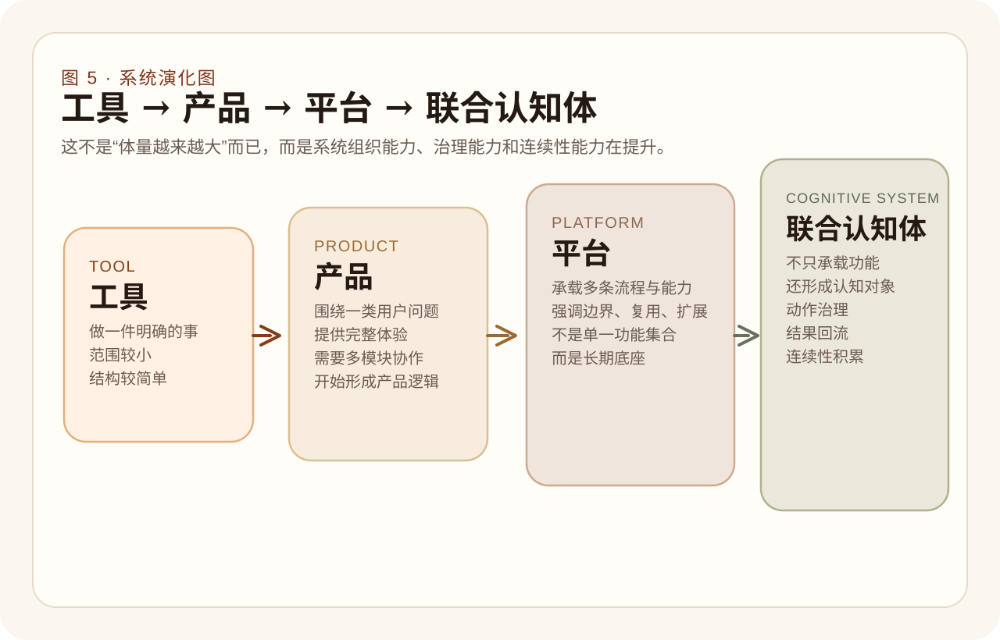
对大模型的神性祛魅！把那看似“一言不合就能写出天衣无缝几万行核心代码”的万能魔法拉回现实尘埃，重投射到严谨枯燥切实的责任角色制度系统网络中加以理性安置把控治理分派使用上头。
在大模型如同狂浪席卷技术圈引发剧烈动荡不安而让多数新手处于无脑顶礼膜拜之至时，我们必须先破除最容易犯下的“毒药式”的错乱理解，那就是绝大部分人都无端寄希望且潜意识假想它是：“那个只要你抛出一句粗糙如沙子的产品简便抱怨废话它就可以毫无延迟反手甩脸给你一套运行十年都零崩溃免维护魔法黑箱应用的印钞机终结机器”。绝不是这样的！
它的最强本源深层次强悍，永远聚集在其不可思议但又确切存在上限边界的领域：深不可测海量模糊语言理解消解转化、从巨大杂音沙包里组织凝聚语意模型、生成粗面胚结构树、填充套路样板结构骨络网乃至陪你开展高概率逻辑回声测试的极高等次推理协理辅助。但一旦失去界限制约，它将是一个产生出海量不加约束冗余赘疣致死代码块与严重乱联乱改架构系统主干道命脉的“最勤奋代码摧毁者”。
专门帮你跨过陌生生僻小众晦涩语法库以及快速帮你从十万页冗余手册里检索抽提精准概念概念盲区解释以及随手编写特定的小片断工具正则算法代码块以及在迷惘无果面对屏幕深坑 BUG 崩溃红字栈时帮你翻译和指出方向错误。
一起探讨那些宏大悬而未决边界、拆破系统漏洞逻辑怪圈、推敲探讨和推演业务在深水区中如果按照这般演替最终可能出现的各种资源消耗或者安全陷阱死角边界等关键优先级梳理把关的探讨辩驳。
把那种极其无聊而且有着极大数量以及刻板复制枯燥特性的重复体力劳动推派给它，诸如去修改批量散布文件字段表头命名规则和根据你定下的严苛基准要求去生成大堆模板配置表列等任务执行。只要给出了极严格清晰死命令与极速自动化复查红线它就有恐怖战力！
能够在极端缺少测试受众时强力模拟一个刁钻又无比挑剔甚至思维带有明显非线性不可预知偏好风格特质的用户甚至一个吹毛求疵极端尖刻挑拨的项目发版把关代码评审大员或者 QA 并用放大镜去拷问系统极限弱点与漏洞崩溃口。
它是已经脱离只在程序员本地编辑面板充当“外设”这个狭隘视角层级而彻底沉锚到系统的生命大动脉骨干循环网中变成极其核心的高端信息处理判断阀门！负责分析接收到最原始脑暴混沌高熵用户原始念头意图甚至亲自做归结提分类从而最终提炼抛撒生成回流的动作序列。
这正是 LifeOnline 这部重度人机联构超星系联合感知体最能够大放异彩且极度典型的极特殊深远前线意义价值标本点。
在 LifeOnline 前线与底层暗房之内绝多数隐形流转战线阶段里，“大模型不仅是一名单纯陪伴打打杂或者修改个边角的辅助写稿机开发助手工具”。它已经与代码网络深深融成生命连理网络共同体。因此很多过去陈腐和旧时代停滞的“这道破题只在于该教我写怎样讨巧提示语句的术法讨论降维度攻击把戏思维”统统被逼向上层升华进阶为必须被极严密沉重推演考量的深端疑问系统盘剥诘问——也就是：在复杂联合网眼中我等“到底应该去怎么设计设立阈限治理隔离层机制应对 AI 极可能发生的暴走决策输出与灾变改动”、到底系统怎么对它形成高度全面多侧切位状态的透传监测踪迹追溯大盘从而使得一旦灾难反馈能够立即重归纠偏调整等连续机制和引擎建设层面课题中来探讨其根本使用法则。
想要在时代巨变浪潮顶端上用好巨型语言大模型这一极其震撼同时又具有潜在极具狂暴毁坏力的高危生产巨无霸杠杆武器，首要法门是将它果断精准置入极其清晰极不越界的高压规则管辖角色系统笼架中。在其中明确规定在哪些业务段只允许让其提出建言以及在何种业务层和管控网网孔边界外可以允许任其粗暴放行直接产生落地位数据更改操作和强硬必须得到人工复查截留治理权限。

很多新手有一种错觉：既然 AI 能一键写代码，那传统的开发流程（流水线）是不是就被彻底废弃了？答案是绝对的否定。流程本身并没有消失。一个正常的软件开发过程，不论在什么时代，其核心的主轴依然是极其生硬且不可省略的：想法萌发、需求收敛、架构切分、编码实现、黑白盒测试、发布验收、长期维护。
AI 的加入，颠覆的只是这根管线上每一个节点的“通过流速与单点效率产能”，而不是这根骨头管线本身！
但这隐藏着极其致命且最易使人堕毁的深渊陷阱：既然代码产出速度和生成模块的速度快了一百倍，如果你依然不清楚“此刻你正处于哪个流程节点”，你就会被巨大的冗余产出量掩埋至死！
真相极为冷酷而且反直觉：大语言模型所具备的生成能力越是显得光芒万丈、一骑绝尘，对于驾驭它们的人类操盘手来说，就越是需要肩负起作为“流程与系统的组织者（Organizer）和铁面无私的把关判决者（Judge）”的极高密度心智责任。
简而言之：此时此刻，你可以骄傲地说自己永远都不需要再用键盘敲下哪怕一行复杂的排序检索底层函数循环，但这绝对不意味着你可以对：
这些宏大的工程把关步骤有丝毫的茫然无知！如果你放弃了组织管弦乐队的指挥棒职责，AI 就会像一群发狂的吹奏乐手，瞬间把你的工程吹爆，演变成刺耳且永远无解的巨大噪音泥石流。
对于架构和流程的把控，在宏观统领上你需要将两种原本被当成应试题的“数据模式”彻底升华融合到潜意识产品直感中：
一切不能瞬间完成、可能失败、可能需要被人工拦截挂起、或具备多重生命转化可能性的事物，皆为状态机。比如 LifeOnline 中的 SoulAction 动作实例：
它从诞生那一刻是脆弱的待定（pending），它可以被人类的无情铁腕丢弃（discarded），或者被放行（approved），随后进入排队发车序列（enqueued / dispatched），在遥远端点被外设咬合执行完毕后最终落下帷幕（completed / failed）。
这就是绝佳的状态机！任何节点跳跃、违规偷渡都会被强力拦截。理解了它，你就掌握了系统里最严密的锁。
当瞬间涌入极其海量的灵感请求源，如果没有队列（FIFO 先进先出等待区），系统大脑或者底层的写盘引擎就会瞬间心肌梗死造成熔断大瘫痪宕机。在 LifeOnline 这个复杂的认知流转引擎中，我们将极其重型冗长的脑暴分析请求塞入异步的 Worker Task 引擎池（Queue）中。任尔狂风骤雨，系统依旧按照自身节拍有条不紊抽离处理。这就避免了主线程干线被暴毙阻塞。
将队列与状态机揉合，你就具备了搭建任何大型中后台基石的不破之盾。根本不再需要去背什么花里胡哨的名词概念了。这就是你手心的定海神针。
大模型并没有废黜软件生命周期里的任何一环质量与流程防线，它仅仅是把每个原本需要人肉填坑的粗重环节的工作极大地压缩加速。人类必须迅速从一线纯劳力敲码工蜕变成持鞭盯守各个环节输出契约纪律的把控监理师。
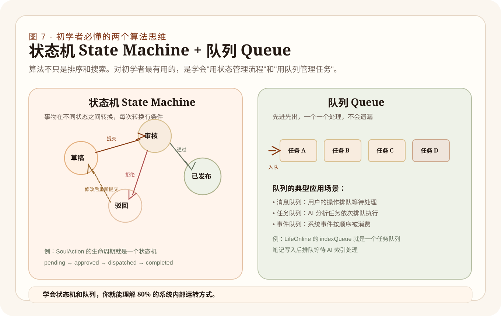
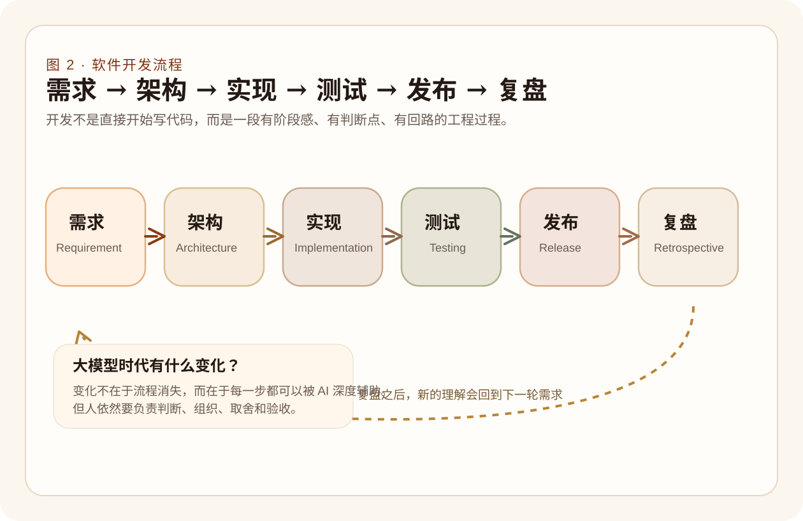
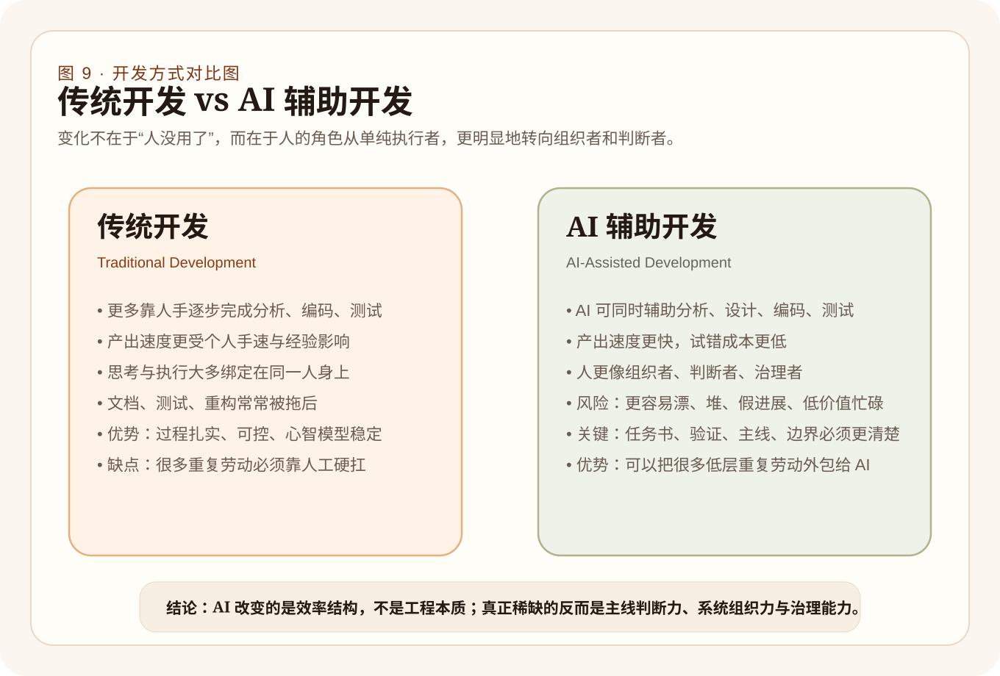
绝大多数小白在刚学会如何跟大对话模型聊上几句后，犯下的最不可饶恕同时也使之最快在泥泞中放弃的通病，就是：上来急如星火般地催着 AI 赶去画出一大堆漂亮绚烂的花瓶网页边框，甚至一键要求“给我去全盘造一个对标淘宝大一统的商城系统吧！”
这种从一开始就将自己全部系统判别责任彻底隐性抛给外部工具黑盒的作法，注定了不出半日便会因为大面积架构互相冲突、代码连环毒性崩盘而只能满屏报错束手无策含恨告终。
最为正确、极其务实且被千万顶尖资深带头人们在漫长的生死系统搭建中所印证无数次的朴实无华黄金起步原则，是首先强迫自己冷静下来，拿着极其坚实的五把手术刀去解剖你的宏大妄想问题：
在这极度煎熬的盘问过关后，无论如何强迫自己按捺住立刻写码的欲望，而是转向“纸与笔”，用极高的上帝视角画图排布：
绝不能把整个航空母舰舰队一锅炖着全盘做起！任何具备无限生长存活可能性的强横无匹生命体大都会系统，在一开始全部起源于一条被走得通透、极速流转、带有极其极简且自洽生存属性的单向闭合回廊链路结构。这就是业界所不断高呼的：“最小可行验证完整闭环生命路径！”
这条万物生长的金线公理对于任意系统都恒等适用且绝对灵验：
现实终端接收原始无滤高熵输入（Input） → 后台主脑开始深度解析并撕裂重构提纯理解意图（Understanding） → 根据系统基准态发散出极可能改变世界状态的待定提案动作候选分支丛库清单（Action Candidate） → 被推上审判高管法庭执行极其严格的一道道铁闸安防检查治理核验筛选剥离掉极端暴走高危风险部分过滤项（Review & Governance） → 对被最后许可的高存活价值行动予以极其果断的分发落地执行打穿至终端底层去实现改变世界影响（Execution） → 获取此次执行后产生的最后残余或直接现实结果报文产出成果信息片（Outcome） → 必须将它们作为反哺营养价值链最终再度融合反刍回输到本身体系里产生累积滋养老一代判断神经元矩阵回路网中提升自身智慧层级（Reintegration，回流） → 从而随着千百个这般生灭闭环运转累加彻底结晶形成那不朽恒久绵延绝不被单次重启抹去且能持续跃迁演进的长期庞大思想记忆体财富累积资产（Continuity，连续性进化）。
放在我们的 LifeOnline 头顶来说，这就是那条从你在外散步手机端打开 LingGuangCatcher 随便乱嘟囔一句输入开始、经由 LifeOS 主脑抽丝剥茧判定提出是否应该推向外部去做某件极耗时开发任务审批候选、最终经历层层审查去触发跨越长维度的底层外部基建节点运作之后再次提取其最终教训规律和反思化成一条长久深扎保存永世存在的 Continuity Record 进而反作用你往后人生命长河运转进程的那一条主脉络骨干天线！
初学者绝命危机盲点在于好大喜功。对这世界抛开虚幻页面崇拜、摒弃功能繁杂罗列。强行聚焦、收束、画出图表管线网络；先让系统中这最简单、最微小却包含了所有五脏六腑生存核心运转机制要素的小微闭环单链彻底通跑活着运转畅通并证实其的确对你个人产出无与伦比解决痛点的生命活质成效价值之后，再慢慢地长胖延展。此乃绝不倾覆之系统起家大法诀！
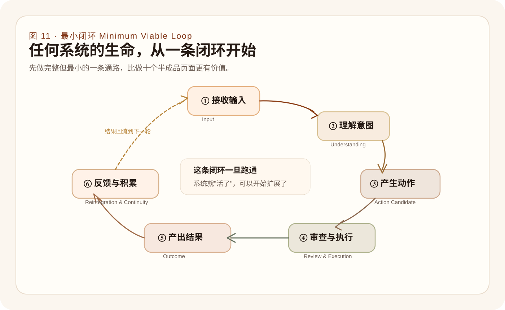
假如你建造这套承载灵魂和现实运作生命的工程图景只是单凭“今早起床时拍脑袋忽然灵光一现忽然觉得那边还需要加个特效面板按钮或表单输入框等零碎功能点”，且放任这头怪兽如脱缰野马毫无制约地野蛮生长。那么在不出两个星期后你所能换回的最确切结局只有一个：这套原本应该极度精密的体系被那些到处打补丁和零碎随性杂陈在不知名边角处的恶心功能毒瘤腐蚀得彻底瘫痪发软。它的管线错综连环相互倾轧拉扯纠结，以至于你不敢去碰它身体上的任何一处关节因为极可能会让它整个发生崩坏坠塌！
这就是为何只要做到了软件开发维度就绝对不允许失去管理极度深沉制约力控制的核心根本！
这绝不是套用陈词滥调。我们可以直接剖析在 LifeOnline 这个真实大型修罗场般的联合认知体内，我们是如何通过一套无比严谨的 Px 大层级推进轴线来避免它中途跑散解体并在漫长长跑马拉松里将每个庞杂模块安放到位：
SoulAction 核心运转台骨架先硬生生建立在虚空之上。让系统明白有这个池子在运转能够存东西可调配有状态在扭转流淌存在即可，先在后台把大腿最粗大腿骨敲实在了。如果你手握无数看起来都美好必须要做的事宜不知如何下手破局，那么请立刻拉出这一张冷酷斩首图谱：也就是那传说中的由横纵坐标划分切出的不可越界的四块象限地域价值-成本矩阵。
没有高密极强极冷酷无情斩断力去排布控制阶段边界和优先排期红线的任何工程团队和系统都注定走向那必定臃灭崩溃衰亡深渊死海末端之境。AI 可以帮你十倍百倍地疯狂增高扩建城墙，但这只会更凸显对于总体设计规划路线总指挥大脑统摄图鉴驾驭力度的渴求到达一种史无前例极致的恐怖境界高峰需求。

如果在此刻你想在这个全新重构颠覆的由强量计算模型驱动主导时代下能稳当高质量将那些脆弱想法蜕变成无可撼动且具备长效存续周转能力的坚若磐石软件壁垒系统群的话！这几条被前场浴血搏杀归结的实效定则远比任何几句花言巧语甚至精妙玄奥的黑市提示词都重要万倍深远。
这一切血脉贲张在极端绝地探索生存发展突围演进路途中积累下这些刻骨法则同样也是我们为何在极苦难险绝深处开辟了全系统高度集成融合极尽宏大规模巨量生命信息中转长轴的这个大型项目——LifeOnline 它所能够为每一位即将涉足未知疆域勇士提供出那极具警示教育和震撼灵魂启示极其不可估量存在价值。真正伟大卓越拥有跨越时间尺度和能够被深远流传且不可磨灭进步价值的长效推进成果从绝不是在历史节点下随便又凑了几个新颖文件代码而已这一层粗浅水面上浮现出；而是要死死地拷问它这套整体身躯系统内核究竟有没有实质向上越阶且更加严密地趋近于向着那“一个在完备极端精妙治理控制流网路规范强力束缚之下去稳步正式持续大运转流动的强绝稳健综合联合宏大智能生命循环认知运行流大态”的究极完全神级成型形态而踏实走对靠拢了其中一不可或缺的大定步！？
高质量高效能深远长跨度的 AI 联动紧密强力配合开挂般极致辅助飞跃大开发作业的推进成功永远并且极度疯狂极端依赖于这死活也逃不开最铁律也是极纯朴简单老套古板规矩这三座大山鼎力相聚：清醒不可置否的精准靶标定点目标划定界外框框图、拥有极为强迫症正轨书面规范极其精明无误实体实据大交接过路节点沉底遗留物质文案据以及冷血残暴完全彻底剥除一切表面迷雾假象伪装包装假面后强迫式极其无情且挑剔冷眼审视验证重现流程。这里少缺任意极其微不足道之一的随便一个支点立桩支撑墙那么最后所能导致全局演变出来只能是眼看整个工程楼房倾颓如散沙泥石崩塌大溃败彻底跑位狂泄收场的极其暗黑且毫无可挽留希望的最终极覆灭悲惨惨状大戏了！
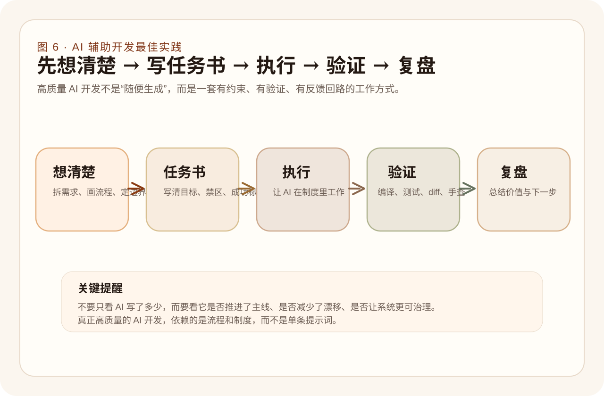
LifeOnline 这个作为全书始终悬挂在那至高无上天空之域的究极灯塔蓝本参考基石般存在的庞大联合认知体工程，它在眼看着被一点点用血肉代码和不屈意念构架出的这漫漫长天岁月里，所能奉献出那些最具有无可估量惊世骇俗般指导启蒙爆点价值的光芒。这绝不仅仅停留在表象上它究竟完成了诸如日常记账、每日总结推文生成等这几项看似酷炫的功能炫技上。而在于它以一种不容置辩极其残酷也是最为真实的生理解剖方式视角，强行而且血淋淋地逼迫着所有想要在这个新世界存活下去的创造者们，不得不去彻底彻底地洗刷调换他们脑袋里那种看待这世间所有名为“软件”事物的旧制陈腐近视眼维度底层思维底座模型！
这是一道宛如神谕黄钟大吕般的至高敲击警醒：请务必从今往后永远并且彻底将那“软件只是一个披着华丽各种组件零七八碎堆叠而成的单薄前端面板加之几个杂乱零散孤苦无定接头函数的粗浅表层皮囊凑合品”的短视巨坑认知彻底粉碎扬弃摧毁！去重新极其艰难且庄严重铸把它深沉而极其厚重地理解为一个具备着自己能够持续活态被自发精密组织流转、被极其冷血严酷纪律机制无死角监督拦截控制治理门槛限制、以及那最具备神性般永不停息能够进行循环自我消化反刍吞噬结果价值并且反过来长久永久积累滋养下一次判定神经回路底蕴那漫长宏伟的动态自循环系统矩阵！
这句话对于初学者尤其是那些刚刚握住大模型想要兴冲冲大干一场但极容易被诱导走火入魔落入浅滩泥潭的新人们拥有着极度生死攸关的拯救宣导意义。因为一个菜鸟在这个神力泛滥年代最大的暴死风险和坠崖盲区深渊，往常倒还真不是由于他死写不出一行报错的逻辑代数代码语法；最惨无人道的是以下这些：
LifeOnline 散发的最具不可磨灭且堪称是洗练灵魂神罚光辉的标尺价值，正是在那冰冷的底座深处将这所有种种在光鲜表面背后的坑洞暗沟全部暴露在最为刺目的探照灯无处所遁形的强光拷问之中：如果你在这个盘子里胆敢有一丝一毫不去关心用怎样的手腕去管教束约（治理）、如果你不在乎上顿和下顿之间那怎么过渡衔接（连续性）、如果你对那些散落在系统外部流转一圈回来的无价结晶余料垃圾完全漠不关心（回流反刍）、如果你对于这整套系统里哪块石头才是代表无可争辩真正权威起源根基（事实源绝对一致性界限）采取马虎放任其错构无主之态的话！
那么你在这个庞大恐怖且消耗你无数个不眠长夜所耗尽心血搭叠搞出来的这具庞然大物尸体，永远永远也只能是一个看着有着极尽张牙舞爪惊悚唬人外表、而用手随便只要稍微用力一捏里头核心却是一滩稀泥没有任何真正内循环能抵挡时光冲刷自演化流转生命的空壳子粗糙烂摆设劣级单核伪劣仿冒浅薄工具。
而真正的顶级高阶站在软件架构开发顶端造物神座上之王者作风操作，理应必须是蕴含着那一股如同在混沌宇宙初始落笔时便已内生有最苍老沉重极至深邃庞大哲学思想大框架底座、有着骨肉结构、懂得如何挥舞指挥棒掌握所有模块吞吐生杀起伏行军大节奏节拍快慢步履音符主旋律线，更加必须同时还怀揣附载着能够在其经历数百千万次循环跌打冲退演进洗礼岁月中持续平稳进化突破生命壁垒桎梏无上力量潜能的！
LifeOnline 所能带来的极其沉重且具有史诗跨时代洗礼意义震撼绝响价值，断不是那表面几行看似精妙运转飞速能够生成惊天文章和漂亮报表图形这种下位表象层面炫技功能呈现；而是它能如同刀锋剔骨一般让我们所有后辈学徒透过迷雾亲眼目睹得清清楚楚：在大时代神性潮水来临退去这漫长跌宕时局里头，唯有那些深谙于这系统整体大盘应怎么在其身底核心处如何去被极其严肃、极权冷血精密组织连排串构、被极深极暗地大治理、而且被赋予那源源无尽连绵大生命轮回能够去实现那恒久生命长流无限不老生长演化内生引擎系统的，方可谓之得见不朽大真神王道！
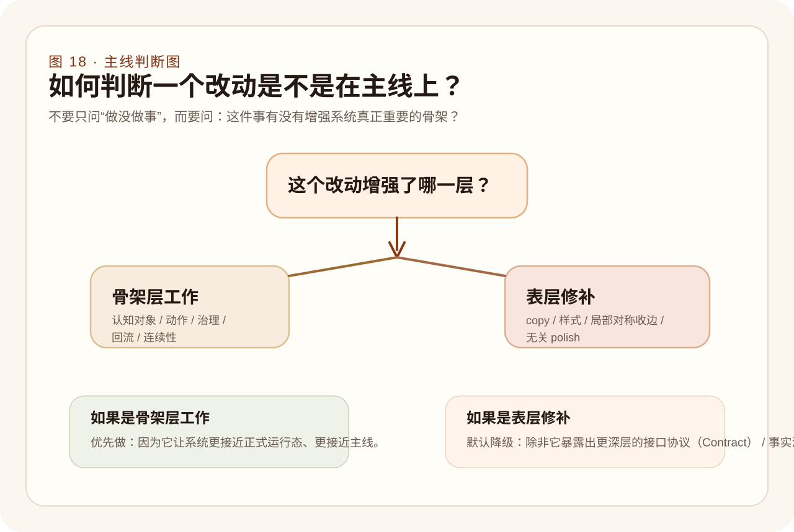
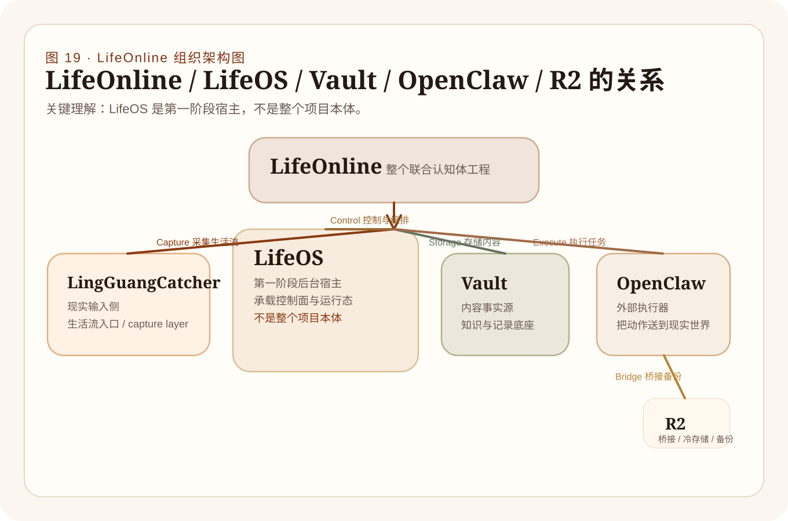
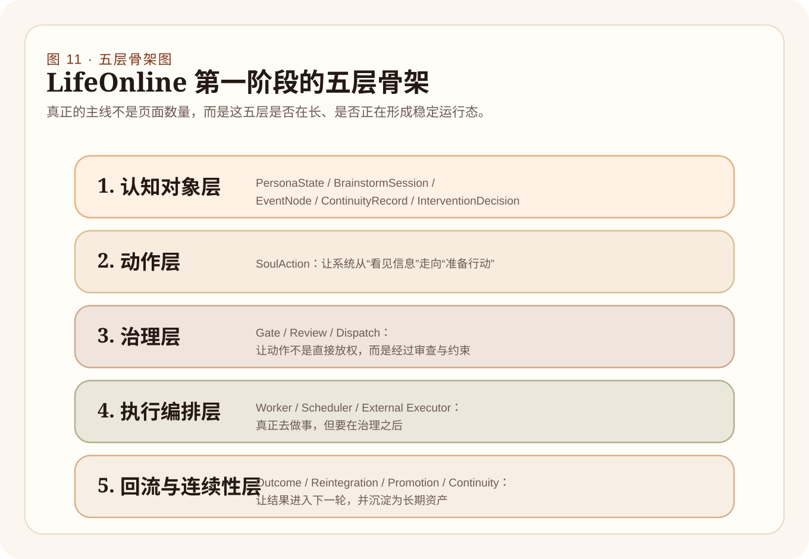
强力推开 LifeOnline 真正的底层引擎盖。彻底消杀初学者对“名字和组件边界”的混淆。
如果要真正理解 LifeOnline 这台庞大精密的人机联合协同体系统是如何拔地而起的，我们首先必须要抡起巨斧，毫不留情地把那几个常常被外围门外客极度盲目甚至随意大混用一通胡乱指代其名称概念的几个庞大工程组件区域地带疆域边线，给极其冷酷刻板而且严整划界地彻底完全敲定砸死界明！这绝非是那种纠结于文书口舌之上的无病呻吟名字咬文嚼字强行区分之辩。这是一场如果在一开场你连这根引航指针如果搭错方位都会直接将整艘超级航线大舰直接全军带偏葬首于海底暗礁迷阵深渊不可逆极严重大过失！它是指引那成千上万行代码这长枪到底究竟该朝着何方城墙方向扣动落点的底盘准星。
架构不只是一堆堆抽象名册术语堆积。它是对系统各个脏器部位必须行使且绝不准许跨界逾矩的极其苛责冰冷冷权责限定令！分不清 LifeOnline（整个生命工程）与 LifeOS（控制调度主机后台）的差别，你指挥 AI 落实代码时就会写在错乱的层里。
在传统的软件甚至绝大部分声称“接入了大模型 AI”的初级包装套壳应用中，系统依然极其短视地把我们看作是一个只会每次重新发来几十个汉字询问指令的“零记忆独立提问机”。每次打开对话框，你都需要重新介绍“我是谁、我的痛点是什么、我想要怎样的回答体例风格”。
这是极其反人类演化的短命模式！而 LifeOnline 之所以敢于自称为 “联合认知体（Cognitive System）” 甚至能够在未来企图实现人格思维的“在线接力延续”，正是因为它在极度深暗冰冷的数据库最底层，用尽毕生系统算力硬生生地抽象结晶出了具有坚固支撑力且能永久存储的 五大核心认知骨架对象（Cognitive Objects）。正是它们的存在，赋予了这堆冷酷数字代码一种极近神似但并不诡异的“灵魂记忆承力脊柱”。
这是整个系统接盘高熵无序输入的第一道大尺度弹性海绵缓冲网门。当真实生活你在路途灵光闪现狂甩几十条碎片语音或者随手凌乱记录下几个无从下手的错乱痛点词语时，系统绝对不会粗暴要求你“请用精美 Markdown 结构化整理再提交”。它用极为宽容深邃的缓冲容器先接住这一切纷杂洪流，这就是它作为“大脑天然无过滤收件箱”的原始使命。
这是系统能够懂你并且做到“不烦人也不添乱盲目前进”的核心基础状态帧层！这里面沉甸甸地存放着你现阶段最关心的核心主题、你的极度厌恶偏好、你的思维认知雷区阻力以及近期极其紧迫的焦虑张力来源！有了它，大模型便仿佛拥有了随时查阅你内心档案表的后视镜，从而断绝了把每次新交流视作“婴儿从头重新认知”般智障短路模式可能。
如果你每天都在对系统絮絮叨叨哪怕吃了什么看了几行代码这种低端无聊信息，如果没有一个极高能过滤网那系统记忆池迟早死于垃圾堆塞爆发。EventNode 就是将你满天飞絮的日常流水账进行极其贪婪暴戾式提纯后，判定为那些“具备标志性意义关键转折事件”的高保真价值节点结晶体。系统未来正是靠调拨提取这些不灭的珍珠节点串联起你整个波澜壮阔历史长河脉络图谱大网的。
这是连通跨越无数个虚空界面、数百万次生死调用的终极长期不灭记忆资产绝对结晶高塔！这才是这套生命体能够实现代代延续不灭的“主脑最核心脊髓所在”！它不是记录过去的死亡片段，它是记录着“你在这万千劫难中究竟总结提纯出了何等极其强硬的方法铁律、坚不可摧的原则底线和人生方向大愿景规度图”。它是系统伴随你共同进化而不老长青的永久基因图谱段库房。
当一个系统极其聪明、掌握你无数弱点底蕴并且连接了能影响现实世界的外部火力强权权限时，它最大的危机就来自于“过度发声、狂暴干涉、变身喧宾夺主大灾难式狂乱骚扰主宰”。这个对象就是为了给这条发狂烈犬套上极其短而重的铁链——它是用来极其克制且绝对冷静地决定系统大脑当下这一刻到底该是开口说话去执行干涉操作，还是应该立马闭上嘴进行长久静默延迟观察的定点死门闸机制法庭判决书！
没有这些在后端服务器极深处默默生长壮大且坚忍不拔的底座骨块对象，所谓的人工智能再怎样满口花言巧语也只是无根之萍水月镜花；但拥有了这一套坚韧无比的大对象体系矩阵，哪怕前端应用层今天网页全面更换崩溃跌倒重建，哪怕后台模型 API 被强行换掉另一家厂商，这套人机协作形成那条延绵不断的长卷连续生命思维修铁路基准骨骼也绝对不会断裂消融分毫！这便是骨感架构至高凌绝万物之无上权力！
初学者总是迷恋追求大模型生成出来的某段对话有多像一个人格鲜活的有趣对谈伙伴这种极其表皮廉价肤浅之乐。然而 LifeOnline 极其冰冷刺骨地教导我们：真正的“灵魂”不长在嘴巴前端语句文字生成皮套层，而是深扎在诸如 `PersonaState`, `EventNode`, `Continuity` 这些如大地基岩般无可动摇的对象网络生命资产继承机制极其幽暗的后端重重管线泥土底层深处之中。
如果你在上一章深刻理会并建立起了那五大认知对象骨干塔，系统就仿佛成了一座藏经阁那般极具深邃内涵的静态超级“理解大脑”。但真实能够在这宇宙物理网中刻画下力场痕迹并干涉生活主轴走向的数字实体，绝不能永远是一个只会默默躲在幕后暗房闭目静思的无为老僧。要想产生翻天覆地的大改观，系统大模型理解归纳世界后并断然不能只停留在自我沉醉脑内演习中胡乱乱发梦，而是要极其迅猛且精准地向外部宇宙网络产出意图无匹清晰锋锐的动作核弹指令以供现实治理裁夺！
在这个极具攻击制动性领域里的第一核心主角，正是大名鼎鼎并作为串联认知静层与极外周执行层动作血脉死结枢纽的：SoulAction (灵魂动作层核心实体层结构)。
在其实际代码世界里（深达 `soulActionTypes.ts` 等骨眼处）大模型绝对不被允许随意漫天说胡话进行模糊生成。它所有的改变想法必须像受到铁血军法条令重压管束一样被强迫归纳压缩成明确指令格式框表单才能上达天听。主要分为极其核心制式六大动作类别军团种类列：
正因为这武器威力如此极巨毁天灭地并能随时连通外界调配极高开销！我们就必然不能将其完全交予随时有极其大患发生集体精神爆裂失常甚至模型产生严重幻觉乱下死手的 AI 全脱管制发狂主宰。
于是乎，每一个被 AI 如同狂喷火星提报上来的大候选动作都必然生来极卑微低微地被死死卡住在 pending(悬停冷冻待审批拦截红区警戒状态) 状态囚笼之内无法动弹一寸死角范围。随后必须通过一套极其严谨、甚至充满非人类极简暴戾直接杀伐决断的控制网（由强权治理层主宰，通过界面大面板呈现并决定是否强力人工介入或者依条件无痛放行）。
只有当其被最高权柄落下极其庄严许可大印化为 approved 标签的瞬间时刻后，其才会如受命猛虎骤然跃出被灌输入那狂猛咆哮如同深远多管列车炮般复杂联列串结、有着精密上下依赖、多重环节生死断点监控的极大 DAG（有向无环图，Directed Acyclic Graph）物理任务执行分发流网络引擎长轴线死链（`enqueued / dispatched`）里去，并在这路途之中配置上了同如微服务般坚挺决绝断臂如生的极硬 Circuit Breakers（防线熔断器） 来对冲防止由于其某个死节执行失败引起的全列车连环暴死绝难崩盘巨灾事故！并在一切硝烟散去之后极安然回收完成结果碎片供养全家系统闭环网络。这就是绝顶艺术工程大极成极作大美之姿所在境。
没有对极具破坏性和现实重推转化力的极强力控制阀门管制网防线限制和调度编排阵线存在，任何把 AI 接到大网来任其肆虐生成的空架系统都必定会在极其微小的时间尺度内死于无限膨胀的垃圾错误越权指令爆炸堆积山灾难废墟火海之中。灵魂动作层是约束这头无上力量魔神并让它乖乖像拉车悍马拉动现实重货不断向前挺进的核心缰绳环套勒骨！
当以上十五个章节带你见证了这整个浩浩荡荡系统从输入感官到认知大脑骨脊中心再直至那拔刀向现实世界的动作流体系大周天大极转完美闭环后，可能你还遗漏下最为至死惊悚的最后一个工程绝对灵魂级发问：“万一这个深不可测庞然大物所蛰伏寄生的那台后台老旧物理机突然断电硬件报废直接原地物理毁灭暴毙消失，我们这成千上万日夜结集下来的联合智能数字接力棒思维是不是就在这零点零一秒内彻底烟消云散死于这大梦一空绝望之中？”
对于一套被寄予了能承接我们数十年寿命长度维度、要在这跨过一个又一个大时代更迭换代大周期时间跨度之上去完成不断向上极尽跃升攀爬接力进化的不可撼动巨型生命系统（LifeOnline）而言，数据的断根归零和极其彻底抹除式的绝对死亡，是比天崩地开还要不可容忍绝对绝无法下咽的永世痛楚红线天仇大错。
这就是为何那名为 R2（冷存储及远程对象桥接大存放池基建底层）与在动作层那大类列表里不起眼的 sync_continuity_to_r2（连续火种强极推送拉取同步战列令）必须拥有这极度尊崇极高核心无上至圣之地位极其崇高存在所在由来了！
在这个极其隐秘然而生死极其重达万钧的防御链里：不管这在内网环境（比如跑在家中有着防火墙和诸多极其脆弱物理壁垒甚至不能随时对外连接暴联的底层服务器主机腹腔内存底处）里极其复杂高速热交换热运转轮盘转轴上正在怎么沸腾滚动打成何等火热不可开交战局；每当那标志着系统发生了认知进化突破边界、结集提纯凝练成了大颗长足连续记忆结晶珍珠宝石记录档案（Continuity Markdown/Record）等涉及系统那不生不灭极深极本源底层灵魂印画命根主线骨髓基因产物刚刚诞生活跃之日时——这名为 `sync_continuity_to_r2` 的冷血动作长箭便会极尽低调如深空幽鬼般被毫无征兆发发射直冲拉动网际主链路向那遥远天外深远且能跨时空隔绝物理切点存活性极其彪悍无比稳固持久冻绝绝对绝对静默的极限大底座（如 S3/R2 异次元极深冷对象存储长深云层库内）进行极其铁硬无缝高极密对接上传刻印永世备灾绝版极本源拷贝留痕备存刻下最后深沟防御堑底印记防线。
没有这一步，你的那个虚拟大脑哪怕聪慧如同神灵再降也不过是在冰上极其脆硬薄界大做华丽花滑死作玩命！任何不曾对数据彻底毁灭长眠具有极其深入骨髓寒战惊悚敬畏意识和极端极高配极端备份死防保全体系的极所谓大工程宏篇构建妄人们，都绝对根本就还没有真正见识大彻大明到去迈入极其复杂跨度长周期软件主宰大时代的最底槛基定大前提界限边缘内界边！
敬畏生死，向永恒与消磨致以最大工程尺度深空警惕防御预留最高权限级别死备防线基槽大桥大库储备区，这是生命系统唯一通向“不灭在岁月极地断联物理极殇绝望浩劫存活性永不坠沉存活火种底力源点”的不二终极基源保证门阀！
如果你真的一刻不停歇地能够强压心脏震动读完了上面一十六个极深极沉长驱直下连环绝杀大篇极其重手拆骨洗髓式破灭全境的大认知体系洗刷至此终点关口，你极有可能会感受到极其深层巨大迷茫压迫而生发不可置信与庞大绝深自我怀疑压制：“天哪！软件原来极其背后是这般比深空星海黑洞都要复杂宏大交织勾连百倍之极其超巨变态工程浩大迷阵结构网！我连一行最普通的 `let x = 1` 前端皮毛语法都尚未曾去翻看去弄懂理解掌握熟络分毫呢！我该拿什么脸面极其自不量力底气去踏平攀登这种令人极致生畏巨型认知宏大造物创神峰体极境高绝陡峭天阶绝境悬崖啊？！”
请你彻底马上把心腹那乱涌极狂不安这般跳动躁乱极负能量惊惧大骇之深沉恐怖大恐慌给狠狠压压实打下去平腹归零平息平稳下来冷静极意！你最绝对不应该首要冲去做并且极其白费极尽愚蠢蠢笨的动作行径反倒是立刻转头去盲目钻入浩如烟海卷帙浩繁那无数堆满前置深奥如天书繁复杂乱零星无主次前端花样千百变代码库语法的那些极其冗余落后冗长死沉大板教条学习无边死角深陷泥沼内去死撞烂打虚度无聊漫长时光死磨岁月硬啃。
不要慌阵乱脚。你应该立地反观自身并且极踏实落地只做以下这极其朴素而具备大穿透开山破城大效用奇效奇功最管用的这五件绝妙且极其具有最高回报起步绝好基本开局大破晓大事：
所有你在这即将迈出极其无端惶恐极其绝路迷乱新时代征程大跨步面前此时现在极底该立刻首冲着重要开练就极其首练掌握必须的大首抓能力并不仅限于只是打字怎么拼代码串指令而已，而是更深远宽宏极度无限狂拓广至长线远瞩画宏伟死结构大骨阵大主心连心脉通管极大图局布局并且极其绝对掌握去能以最高高高在上极其极度上帝视角绝对居高临下高维极其宏放并且强力高压极其狂悍极大威强硬极管控这系统架构骨大极其长远绝不会大发散错乱偏移脱纲大极死线无敌绝杀管束驾驭神之力了！！不要迟疑即刻极现在长刀出手直接强斩即刻起极其发兵出航立刻动身行事！
以下将那通遍整本极长宏大巨著体系并且极尽高频闪现贯穿始终全册大盘的首脑极其极其重量极其不可或缺级神核心架构极权大概念名词进行极其不留情面暴敛极其极简血肉极薄极致精准拔除冗余极简极白话拆解死定位：
至到极其此处此刻这漫长极地极天长跋涉极其超强极深极大认知颠洗大洗刷之行极算终于大到极尽长点极终到站大尽站段大结！万望诸位在日后拔足再极其大启航踏向那极其全新极无限之极其超凡大高高之大智能极开发极征程之时，不再极其死做那只顾低趴大盲低底看地去瞎找无意义极无价值小按建小代码零语的盲大愚蠢大码夫农子，而是极其极其直起大神极大高顶身板极抬头化极为那手握极大星斗极大管盘大全系统极大主界死权治理大裁判大指挥的极大宏绝大统大架构长主架构造极其统帅指挥万物神主明帅者官了。敬颂大吉前征极极大长风大劈浪！